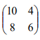
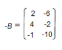
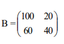
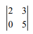
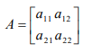
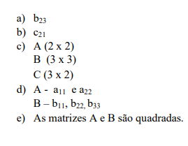

Capítulo 4 – A indústria calçadista
MATRIZES E DETERMINANTES NO CONTEXTO DA INDÚSTRIA CALÇADISTA
ContextualizandoNo mundo atual, torna-se cada vez mais evidente que as empresas, em especial as indústrias, precisam otimizar seus sistemas produtivos para poder competir no mercado. As pesquisas referentes à gestão de custos abordam o desenvolvimento, a validação e a aplicação de novos modelos e algoritmos de cálculo que possibilitem a implementação de soluções eficazes e eficientes. Uma ferramenta matemática comprovadamente eficaz para a otimização de custos é o ABC Matricial que tem por base a multiplicação de matrizes.
Aplicada na indústria calçadista essa ferramenta matemática, específica para a gestão de custos de um produto, oferece um algoritmo simples e flexível que pode ser aplicado em um software que possibilite, inclusive, a simulação do custo de produtos, para as melhores tomadas de decisão.
Comprovadamente, na Matemática, as matrizes oferecem às indústrias e também ao comércio algoritmos e formas de otimizar, por exemplo os custos e os controles de vendas.
O que é uma Matriz, essa ferramenta matemática que oferece formas simples de representar sistemas produtivos? E, o que são determinantes?
Caro aluno!
Nesse capítulo, vamos estudar Matrizes e Determinante, um tema do campo algébrico que nos possibilita desenvolver habilidades de resolução de problemas complexos como os relacionados aos algoritmos de cálculo que otimizam a custos.
(RE)CONSTRUINDO CONHECIMENTOS
MATRIZES
No nosso dia a dia, frequentemente lidamos com elementos dispostos em linhas (filas horizontais) e colunas (filas verticais), que formam uma tabela ou um quadro retangular. Em linguagem Matemática, este quadro ou tabela que pode ser escrito com os elementos dispostos em linhas e colunas é denominado Matriz.
Vejamos dois exemplos de matrizes, associando-as ao seu uso:
Exemplo 1Observe na tabela a seguir, o número de carros dos tipos A, B e C vendidos em uma agência, durante uma semana:
Agora, observe a tabela representada na forma de uma matriz:
Essa matriz tem três linhas (filas horizontais) e seis colunas (filas verticais). Nesse caso, tratase de uma matriz 3 x 6. Esse produto (3 x 6) indica a ordem da matriz, o que a caracteriza. Nesse produto, o multiplicador, o número 3, indica quantas linhas e o multiplicando, o número 6, indica quantas colunas tem a matriz que, no caso é uma matriz retangular, porque o número de linhas é diferente do número de colunas. O produto 3 x 6 indica a ordem da matriz. Assim, dizemos que essa Matriz é de ordem 3 x 6, entendendo-se que ela tem 3 linhas e 6 colunas e, portanto, 36 elementos. No produto que determina a ordem da matriz, o primeiro fator que indica o número de linhas, genericamente, é representado pela letra m e o segundo fator que indica o número de colunas é representado pela letra n. Quando indicamos, genericamente, que uma matriz é de ordem m x n, dizemos que ela tem m linhas e n colunas.
Vejamos um exemplo: Dois trens de números 1 e 2, respectivamente, transportam material de construção indo de duas localidades L1 e L2 até o local C, da construção. O primeiro trem faz 10 viagens de L1 até C e 8 de L2 até C. O segundo, faz 4 viagens de L1 até C e 6 de L2 até C.
Observe o quadro a seguir:
Representamos o quadro acima pela matriz A =  que também pode ser representado por A = ou A = .
Na 1a linha, os elementos são 10 e 4. Na 2a , linha, os elementos são 8 e 6 Na 1a coluna, os elementos são 10 e 8. Na 2a coluna, os elementos são 4 e 6 Essa matriz tem 2 linhas e 2 colunas, sua ordem é 2 x 2. Como o número de linhas é igual ao número de colunas, esta matriz é denominada Matriz quadrada de ordem 2. Matrizes são formas simplificadas de representar uma informação e são nomeadas com as letras maiúsculas do nosso alfabeto. 1º 2º
REPRESENTAÇÃO GENÉRICA DAS MATRIZES
Na matriz a seguir, temos que, cada elemento é denominado por um a, seguido de dois números em que indicam a sua posição.
Observe que essa a tabela é uma matriz genérica de ordem m x n.
Genericamente, dizemos que cada elemento de uma matriz é um elemento da forma aij em que i representa a linha e j representa a coluna. Assim, para representar genericamente as matrizes, utilizamos a disposição de uma tabela. Chamamos de matriz toda a tabela m x n ( lê-se “m por n”) em que números estão dispostos em linhas (m) e colunas (n). Cada elemento da matriz é indicado por aij em que i indica a posição do elemento referente à linha, e j, a posição em relação à coluna.
Na matriz genérica apresentada, temos que:
Muitas vezes, para resolver questões que envolvem matrizes, é conveniente compor matrizes com elementos genéricos, a chamada Matriz Genérica isto é, uma Matriz que usa letras minúsculas seguidas de índices numéricos que indicam a linha e a coluna, respectivamente, como mostra o exemplo a seguir:
A partir de uma matriz genérica, podemos compor diferentes matrizes.
Como procedemos para compor uma Mariz a partir da Matriz Genérica?
Vamos ver o procedimento para compor a Matriz A = (aij)2x2.
Vamos compor uma Matriz quadrada de ordem 2, portanto, na sua determinação (A = (aij)2x2 ), i= j em todos os termos da nova matriz em que a lei de composição da matriz é seja aij = i + 3j Para cada termo da Matriz.
Procedimentos:
1º Elabora-se a Matriz genérica referente à Matriz solicitada;

2º Observa-se a lei da Matriz aij = i + 3j
3º A partir da lei aij = i + 3j e dos índices i, j dos elementos da Matriz, calculam-se os termos da nova Matriz:
4º Substituem-se os temos calculados na Matriz Genérica, compondo a nova matriz:
TIPOS DE MATRIZES
De com as características, (o número de linhas e colunas e os seus componentes), há diferentes tipos de matrizes. Ao definir as matrizes e seus elementos, já conhecemos as matrizes retangulares e quadradas. Temos ainda:
Matriz Linha: formada por uma única linha, por exemplo:
Matriz Coluna: formada por uma única coluna, por exemplo:
Matriz Nula: constituída por elementos iguais a zero, por exemplo:
Matriz Transposta: indicada pela letra t, At é aquela que apresenta os mesmos elementos de outra, sendo que os elementos das linhas da matriz A são os elementos das colunas da matriz At , e os elementos das colunas da matriz A são os elementos da matriz At . Obtemos a matriz transposta At, trocando as linhas pelas colunas da matriz A, por exemplo:
Matriz Oposta: indicada por –A é a matriz A cujos elementos são multiplicada por -1. Ou seja> os elementos da matriz oposta –A são os opostos ou simétricos aos da Matriz A, por exemplo:
Matriz Identidade: indicada por In é a matriz quadrada de ordem n cujos elementos da diagonal principal são todos iguais a 1 e os demais elementos são iguais a 0 (zero). A matriz identidade é o elemento neutro na multiplicação de matrizes., por exemplo:
Igualdade de Matrizes
Duas matrizes A e B são iguais quando têm os mesmo elementos nas linhas e colunas correspondentes por exemplo:
VAMOS PRATICAR...
1- Dada a matriz determine sua ordem e indique o valor dos elementos a21 e a14.
2- Classifique as matrizes abaixo:
a)
b)
c)
OPERAÇÕES COM MATRIZES
Vamos definir a adição, a subtração e a multiplicação de matrizes e, ainda, a multiplicação de um número real por uma matriz.
A adição de matrizes é definida apenas para matrizes de mesma ordem, isto é, matrizes que têm o mesmo número de linhas e colunas. Assim, se A = (aij)m×n e B = (bij)m×n , diz-se que a soma de A + B é dada pela matriz C = (cij)m×n, que se obtém adicionando os elementos correspondentes de cada uma delas.
Exemplo:
Sejam as matrizes A e B:
Concluindo: Para calcular a matriz C = A + B, basta somar seus elementos correspondentes das matrizes A e B.
A subtração de matrizes é uma operação que só pode ser realizada com matrizes de mesma ordem, isto é que tenham mesmo número de linhas e colunas. A subtração entre duas matrizes A e B é obtida a partir da soma da matriz A com a oposta de B, ou seja, A – B = A + (-B).
Vejamos, agora, um exemplo da subtração de matrizes Lembre que subtrair duas matrizes, basta somar a primeira com a oposta da segunda Sejam as matrizes A e B:
A matriz C = A – B = A + (-B)
Inicialmente é necessário calcular a matriz .
A seguir, calcula-se C = A – B = A + (-B) = então,
Multiplicação de um número real por uma matriz
Para multiplicar um número real por uma matriz, tomamos a matriz A de ordem mxn e um número real k e multiplicamos todos os elementos da matriz A por k.
Seja a matriz e k um número real, diz-se que k . A é uma matriz do tipo m x n, obtida a partir do produto entre k e todos os elementos da matriz A.
Exemplo:
Multiplicação de matrizes
Só é possível multiplicar duas matrizes A e B, se o número de colunas de A for igual ao número de linhas de B, isto é, sendo A de ordem mxn, B deverá ser de ordem nxp, ficando a matriz produto AxB com ordem mxp (p=m ou ≠ m e p> 0).
Observe:
A matriz produto AxB(2x3) tem três linhas e duas colunas e é representada genericamente por
Nessa matriz, o elemento α11 a é a soma dos produtos dos elementos da 1ª linha da matriz A pelos elementos da 1ª coluna da matriz B, o elemento α12 é a soma dos produtos dos elementos da 1ª linha da matriz A, pelos elementos da 2ª coluna da matriz B, e assim, sucessivamente.
Observar a seguinte situação-problema: Considerando o exemplo dos trens, a matriz obtida foi
Suponhamos agora que os dois trens transportem toneladas de areia e cascalho, conforme a especificação ao lado:
Temos então a matriz 
Queremos calcular as quantidades totais de areia e cascalho que são carregadas de L1 para C e de L2 para C. A resposta é obtida através da operação multiplicação de matrizes. Para efetuar a multiplicação, é interessante fazer um dispositivo prático, como o que segue:
Para calcular cada elemento da matriz produto AxB multiplica-se cada elemento da primeira linha da matriz A por um elemento da 1ª coluna da matriz B e somam-se os resultados:
Assim, para multiplicar duas matrizes, calcula-se a ordem da matriz resultante, a partir dessa ordem, constrói-se a matriz genérica da matriz produto e, cada elemento da matriz produto é calculado, observando seus índices. Por exemplo, para calcular o elemento a11 da matriz A x B, multiplicam-se um a um, os elementos da primeira linha da matriz da matriz A pelos elementos da primeira coluna da matiz B e somam-se os produtos e, assim, sucessivamente.
VAMOS PRATICAR
1. Dadas as matrizes calcule:
a) A + B
b) A + C
c) A – C
d) B + C
e) A + B – C
f) A.B – C
g) 2.B
h) 2.A + 3.C
DETERMINANTES
VOCÊ SABIA?
Uma das aplicações de Sistemas Lineares e Determinantes, junto com outros conceitos matemáticos é no funcionamento de um GPS (O Sistema de Posicionamento Global GPS - Global Positioning System).
A humanidade tem desenvolvido sistemas cada vez mais complexos e precisos para determinar a localização exata de um indivíduo ou de algo sobre a Terra. O GPS foi concluído em Julho de 1995 pelo Departamento de Defesa dos EUA, e seu uso foi autorizado para o público geral. O sistema consiste de uma parte espacial (os satélites), uma parte de controle (as estações terrestres de gerenciamento) e uma parte do usuário. Em 2005, o sistema consistia de 32 satélites, sendo que 24 deles estariam em funcionamento, e o restante ficariam prontos para entrar em ação em caso de falha. Os satélites estão posicionados a20.200km da superfície da Terra, em seis planos orbitais.
Associado a toda a matriz quadrada A=[aij] (a que tem o número de linhas igual o número de colunas), há um determinante que é um número real calculado, segundo uma determinada lei.
A notação para do número real que é o determinante da matriz será det A ou  assim, a matriz A escrita ente duas barras também é lida determinante de A.
Podemos dizer que determinante de uma matriz quadrada é o seu valor numérico.
Os determinante podem ser de orden n, sendo n a ordem da matriz.
Determinante de primeira ordem ou de ordem 1:
Uma matriz de ordem 1 é uma matriz quadrada que tem 1 linha e 1 coluna, portanto é do tipo
Podemos concluir que o determinante de ordem 1 terá o seu valor numérico sempre igual ao seu elemento.
Exemplos :
Determinante de segunda ordem ou de ordem 2:
Uma matriz de ordem 2 é uma matriz quadrada que tem 2 linhas e 2 colunas, portanto é do tipo 
O determinante de ordem dois possui uma diagonal principal e uma diagonal secundária.
O determinante de ordem dois possui uma diagonal principal e uma diagonal secundária.
Exemplos :
O cálculo do seu valor numérico é feito pela diferença do produto da diagonal principal com o produto da diagonal secundária.
Determinante de terceira ordem ou de ordem 3 :
Uma matriz de ordem 3 é uma matriz quadrada que tem 3 linhas e 3 colunas, portanto é do tipo:
O determinante da matriz de terceira ordem é calculado pela soma dos produtos da diagonal principal e suas paralelas menos os produtos da diagonal segundária e suas paralelas.
Regra de Sarrus :
det A = P1 + P2 + P3 – P4 – P5 – P6
Exemplo :
PRATICANDO...AÇÃO E REFLEXÃO
Questões referentes ao estudo das Matrizes
1.) Dada a matriz complete as lacunas referentes aos itens a seguir:
a) Sua ordem é........
b) O elemento da 2a linha e 3a coluna é....
c) O elemento da 2a linha e 1a coluna é ....
2.) Complete os índices dos elementos das matrizes A, B e C e responda as pergunta referentes a essas matrizes:
a) Qual o elemento da 2a linha e 3a coluna da matriz B?
b) Qual o elemento da 2a linha e 1a coluna da matriz C?
c) Qual a ordem da matriz A?................Da matriz B?................Da matriz C?.................
d) Quais os elementos da diagonal principal da matriz A?...........E da matriz B?...
e) Uma matriz é chamada quadrada, quando o número de linhas é igual ao número de colunas. Qual ou quais das matrizes acima é uma matriz quadrada?
4. Identifique a ordem dos determinantes e calcule-os, usando a Regra de Sarrus para calcular o determinante das matrizes de terceira ordem:

O QUE APRENDI
Nesse capítulo, estudamos o conceito de Matrizes, uma ferramenta matemática com aplicação no controle e otimização de processos produtivos, de compra e venda. Aprendemos sobre sua representação e como compor matrizes a partir de uma matriz genérica e como operar com Matrizes, reconhecendo que há diferentes tipos de matrizes. Complementamos esse estudo conceituando determinante de uma matriz quadrada até a ordem 3 e verificamos sua aplicabilidade na resolução de sistemas lineares.
RESPOSTAS DAS QUESTÕES DA SEÇÃO: VAMOS PRATICAR...
1- A matriz A possui 2 linhas e 4 colunas, portanto tem dimensão 2×4.
O elemento a21 é aquele que pertence à linha 2 e à coluna 1, portanto:
O elemento a14 é aquele que pertence à linha 1 e à coluna 4, portanto:
2- a) Matriz coluna.
b) Matriz linha.
c) Matriz quadrada.
RESPOSTAS DAS QUESTÕES DA SEÇÃO: PRATICANDO... AÇÃO E REFLEXÃO
